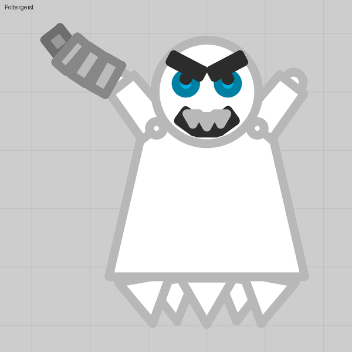
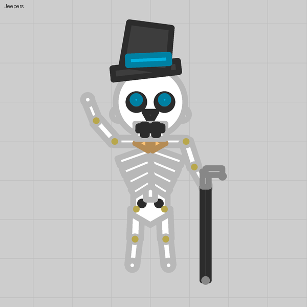

Limbs that live
Give a cursor pivot a Range as well, and the limb twitches toward passing enemies while you are idle and follows the cursor while you fire.
What you see
Four legs that react on their own: a square passes on one side and the legs there turn toward it; hold fire and they reach for the cursor. This is the single biggest reason a figure reads as a creature rather than a sticker, and it is what the big spider in a player-built character pack spends all eight of its turrets on.
The trick
Lesson 07's pivot with one change: a Range instead of 0. With Aims with the cursor on and a range, the turret tracks enemies inside the range while the player is idle, and follows the cursor while the player fires, both only inside its narrow Arc. Rest angle, narrow arc, a range: that is a living limb.
Numbers that matter
| Field | Legs and arms | Hands | A plume or cape |
|---|---|---|---|
| Arc | 15 | 20 to 40 | 15 |
| Range | 250 | 250 | 100 |
| Facing | the pose | the pose | 180 |
Leave Range at its default (1700) for a leg that reacts from further away and twitches more.
Gotchas
- A rear leg resting backward never follows a forward cursor: the cursor is outside its wedge. That is correct behaviour, not a bug.
- A limb that must also pump (lesson 04) needs a free tip at least 0.5× wide. The two tricks combine, but a thin elegant leg and a pumping one are different legs.
- Eight pivots per tank, so a spider has legs and nothing else that moves.
Where we used it

